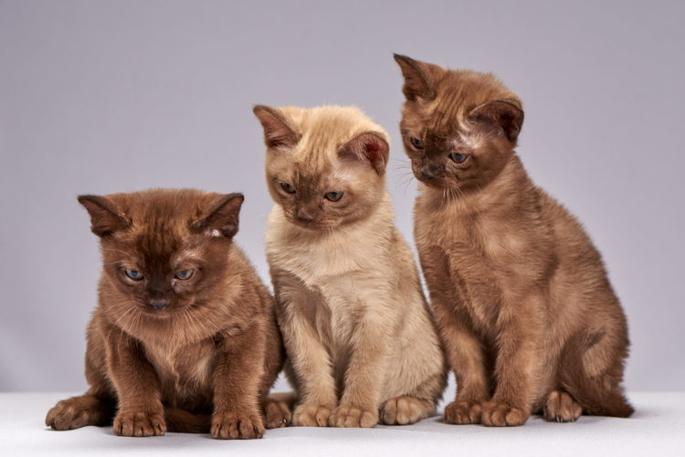
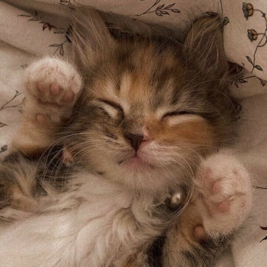
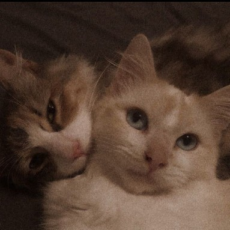
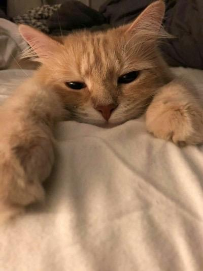
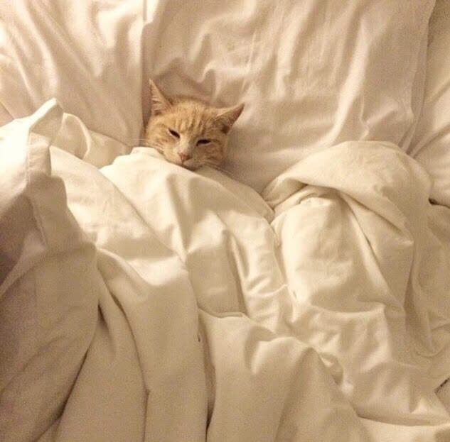
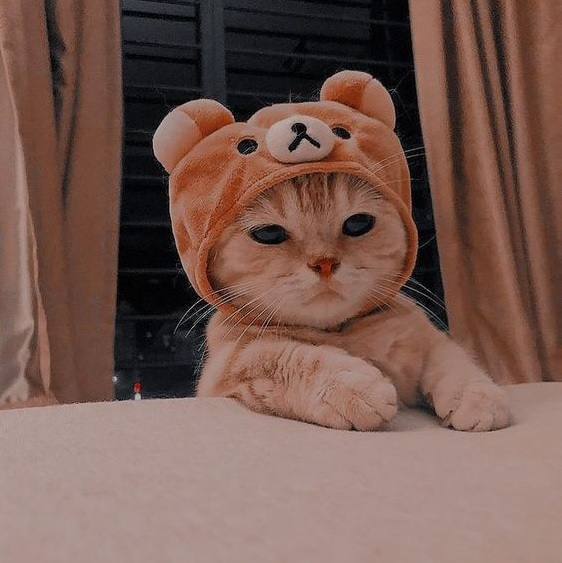

• У середньому коти витрачають 2/3 доби на сон. Тобто дев’ятирічний кіт був активний лише три роки свого життя.
• Кішки, як правило, «риють» правою лапою, а коти – лівою.
• Для того, щоб спуститися з дерева, котам потрібно відступати, задкуючи.
• Коти можуть пересуватися на максимальній швидкості близько 50 км/год. на короткі відстані.
• Вони підстрибують на висоту, більшу в п’ять разів за власний зріст.

• Коти труться об людей не тільки з ласки, але і для того, щоб позначити територію запахом залоз, розташованих навколо мордочки. Також запах виділяється в ділянці хвоста і лап.
• Учені не знають точно, чому кіт муркоче. Більшість ветеринарів вважає, що кішка муркоче вібрацією голосових зв’язок, розташованих глибоко в горлі. Для цього м’язи гортані відкривають і закривають прохід повітря близько 25 разів на секунду.
• У кішки в тілі 230 кісток (у людини тільки 206).
• У котів немає ключиць, тому вони можуть пролізти в будь-який отвір розміром із їхню голову.
• Поверхня носа у кішок так само унікальна, як відбитки пальців у людей.

• Серце кішки б’ється майже в два рази швидше, ніж людське (від 110 до 140 ударів на хвилину).
• У кішок немає потових залоз. Вони потіють тільки через лапи.
• Всього за сім років одна пара кішок і їхні нащадки можуть народити в цілому 420 000 кошенят.
• У дорослої кішки 30 зубів. У кошенят – 26 молочних зубів, які випадають у віці півроку.
• Кішки дуже чутливі до вібрації. Вони можуть відчути поштовхи землетрусу на 10 – 15 хвилин раніше від людей.

• У кішки приблизно по 12 вусів з кожного боку мордочки.
• Зір кота одночасно і кращий, і гірший від людського. Представники котячих набагато краще бачать у темноті і мають ширший кут периферичного зору. Але вони не розрізняють кольори. Наприклад, трава здається кішкам червоною.
• Щелепи кішки не рухаються з боку в бік, тому вона не може жувати великі шматки їжі.
• Коти дуже рідко нявкають до своїх родичів, зазвичай – тільки до людей. Кішка швидше фиркатиме, муркотітиме або шипітиме на інших кішок.
• Спина у котів дуже гнучка, тому що має 53 вільно прилеглих хребці. В людини тільки 34.

• Всі котячі ховають кігті в стані спокою, за винятком гепарда.
• Кігті на задніх лапах кішки не такі гострі, як на передніх.
• У котів є 32 м’язи, що керують зовнішнім вухом (у людей їх тільки шість). Тому хвостаті-вусаті можуть повертати вуха на 180 градусів.
• Одна з причин того, що кошенята так багато сплять, полягає в тому, що гормон росту в кішок, так само, як і у людей, виділяється тільки під час сну.
• У кота приблизно 20 155 волосин на квадратний сантиметр.
